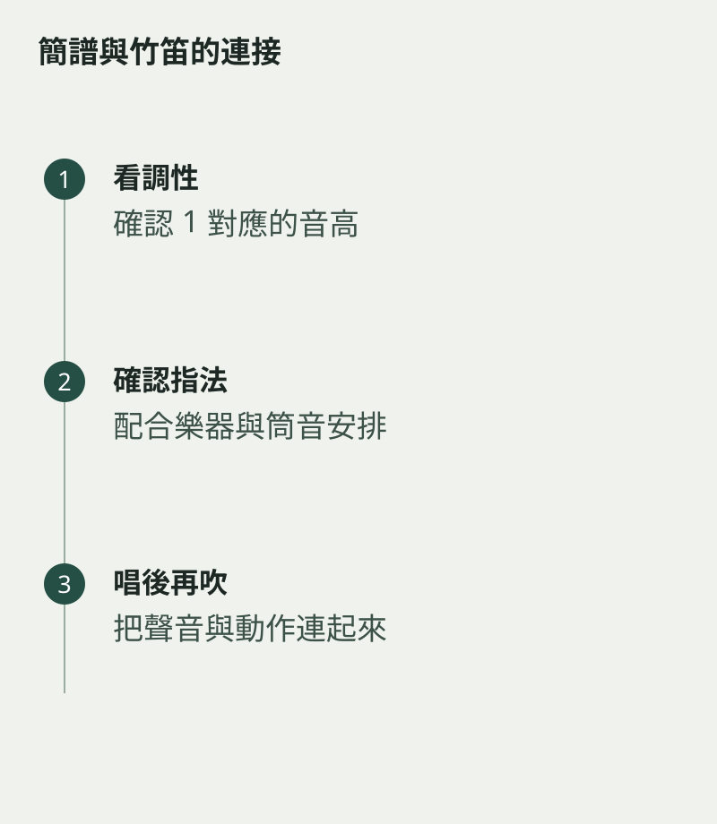

同樣寫着「1」，換了一首曲，實際音高卻可能不同。竹笛讀簡譜時，要把唱名、調號和指法一起理解。簡譜中的數字表示音級，譜首的調性標記則幫助你知道這些音級落在哪個實際音高上。
如果只背「按住幾個孔就是哪個數字」，遇到不同筒音安排便容易混亂。先弄清手上是哪一調的笛、樂譜用甚麼調，再跟老師確認本曲的指法系統，會比死記更穩。
把唱名與音高分開說
例如譜首標示 1=C，便是這首曲的「1」對應 C；標示 1=G，則「1」對應 G。數字之間的音級關係仍然可以用來理解旋律方向，但實際發出的音高已改變。
先唱一條簡單上行旋律，再在樂器上慢慢找回來。不要同時處理很快的節奏，讓耳朵有時間把唱名、指法及聲音連在一起。遇到拿不準的音，寫下來問清楚，比一路猜着吹更省力。

換曲之前讀譜首
開始新曲，依次看調性、拍號、速度及音域。若有低音或高音的點，也要看清楚位置。這幾秒鐘的準備，能避免用上一首曲的習慣直接套進新曲。
可以在練習簿留一行：「這首曲的 1 是甚麼音？採用哪套指法？」能回答這兩個問題，再開始吹。讀譜要逐步明白每個音在旋律裏的位置，讓手指有依據地行動；只把數字迅速翻成手勢，位置感便無從建立。